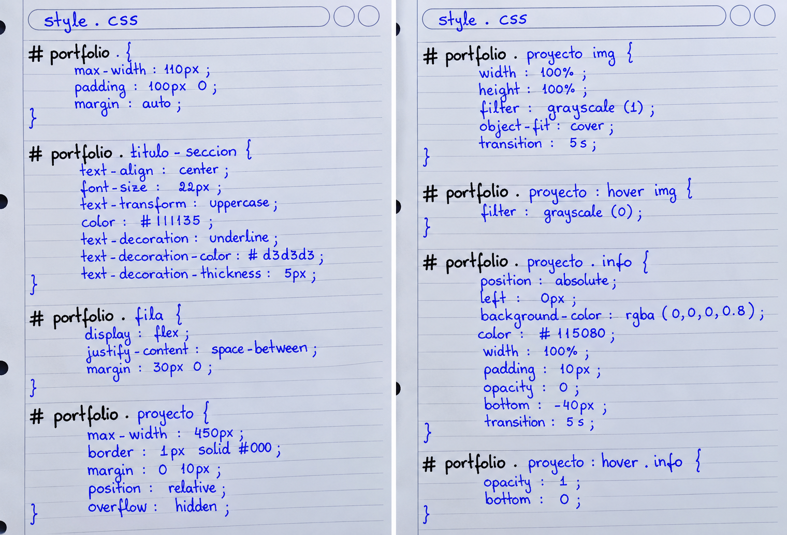

Imagen de referencia · Hoja 1

Contenedor principal, título de sección, fila de proyectos y bloque de cada proyecto.
Archivo style.css · Diseño gráfico de la página web
En esta actividad vamos a trabajar con style.css, el archivo que define el diseño
visual de la página web: distribución, tamaños, colores, imágenes y efectos al pasar el
cursor.
Los selectores se relacionan con la estructura HTML creada en la Actividad 1. Allí
numeramos del 1 al 8 los niveles de #portfolio y sus elementos internos.
Esos números permiten reconocer qué bloque recibe cada estilo y cómo se avanza desde la sección
principal hacia la fila, el proyecto, la imagen y la información.
Observá cómo cada selector —por ejemplo, #portfolio .fila .proyecto— identifica un elemento
de la estructura y aplica propiedades con valores que determinan su apariencia. También se incluyen
efectos :hover para mostrar la imagen en color y revelar la información del proyecto.
Consigna: transcribí en el editor las reglas CSS de las dos hojas de referencia, respetando los selectores, propiedades y valores de tus apuntes.

Contenedor principal, título de sección, fila de proyectos y bloque de cada proyecto.
Escribí las reglas CSS indicadas en las imágenes. El editor incluye resaltado de sintaxis y guardado automático en este navegador.